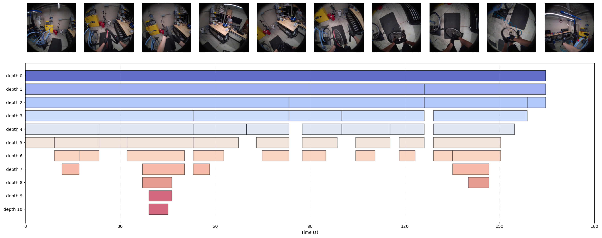
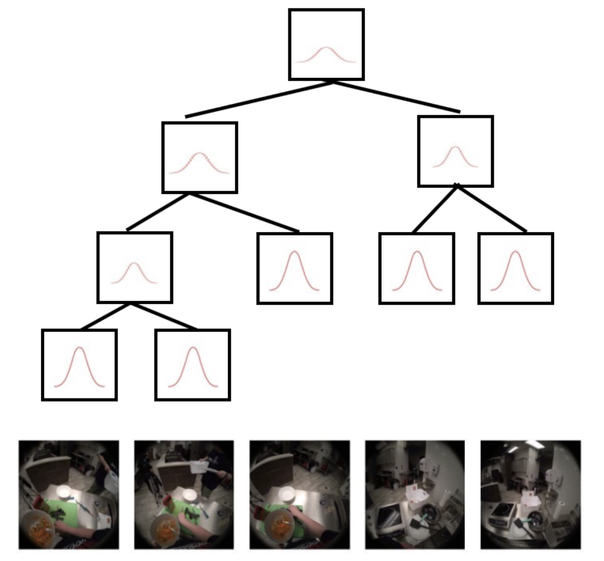

ProbToE
Probabilistic Tree of Embeddings for uncertainty-aware long-horizon video reasoning.

Overview
Processing raw video sequences for long-horizon tasks is computationally intractable due to massive temporal redundancy and high dimensionality. Consequently, high-fidelity reasoning and planning in long-form video understanding require compact, abstracted representations of the internal world state. Current state-of-the-art frameworks address this by constructing a tree of captions: cut the video into chunks, caption each segment, then build a hierarchy by clustering. Early captioning compresses well, but it is lossy, discards visual nuance, and fixed chunks can break scene continuity. Frames within a segment also vary, so a single deterministic summary cannot capture ambiguity.
ProbToE instead builds a probabilistic tree of embeddings, where each node is a continuous distribution in embedding space (e.g., multivariate Gaussian \((\mu, \Sigma)\) or von Mises–Fisher \((\mu, \kappa)\)), preserving uncertainty until task-specific reasoning is needed. Estimating these distributions with Monte-Carlo sampling or averaging is precise but heavy. ProbToE therefore uses conditional flow matching: learn a velocity field from noise toward data, and condition the network on the frame index \(i\) as \(v_\theta(x, t, i)\) so temporal structure is respected. At inference, a lightweight adapter maps chunk context to fully parameterized distributions without stochastic sampling.
Highlights
- Motivation: Tree-of-captions hierarchies are lossy and rigid; video chunks need continuous, uncertainty-aware representations.
- Representation: Hierarchical embedding distributions (Gaussian / vMF) built with divisive clustering.
- Inference: Conditional flow matching amortized over frame index for scalable distribution estimation.
Key figures

